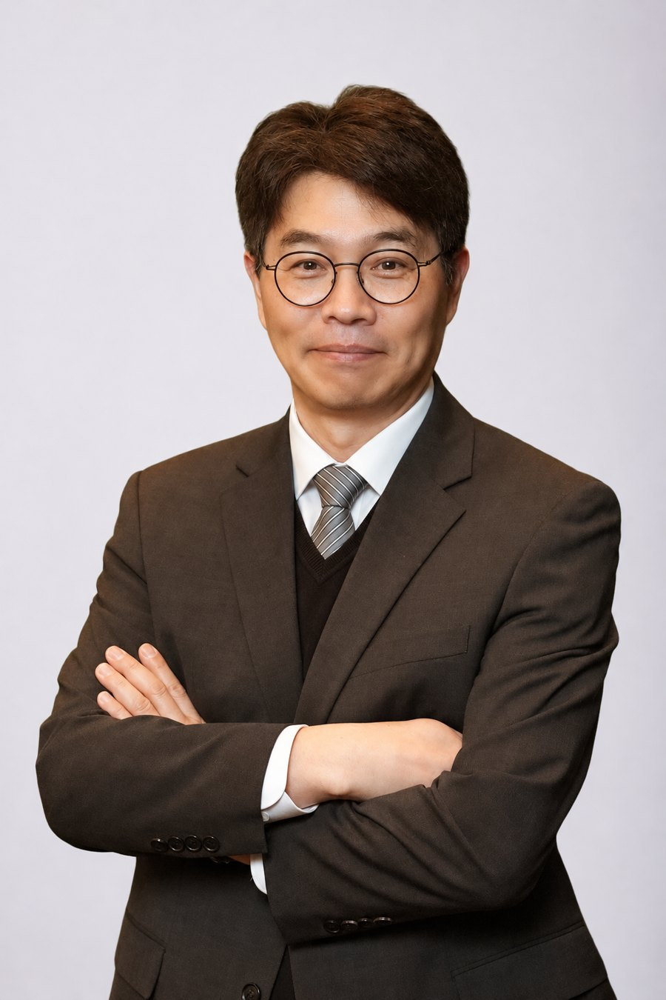

01 / REAL ESTATE
부동산 분쟁
부동산의 소유·점유·사용 관계와 계약 내용을 검토하여 분쟁 해결 방안을 모색합니다.
복잡한 법률문제일수록 사실관계와 증거를 정확히 살피는 일이 중요합니다. 부동산·건설 분쟁, 채권 회수와 강제집행을 중심으로 의뢰인의 상황에 맞는 현실적인 대응 방안을 검토합니다.
법무법인 그린 · 류치환 변호사

사건의 성격과 목표를 파악하고, 소송 전 협의부터 재판·집행까지 필요한 절차와 대응 방향을 검토합니다.
부동산의 소유·점유·사용 관계와 계약 내용을 검토하여 분쟁 해결 방안을 모색합니다.
공사계약의 이행과 정산, 공사대금 및 하자·손해배상 관련 쟁점을 검토합니다.
채권의 발생과 증거, 채무자 재산 및 집행 가능성을 살펴 회수 절차를 설계합니다.
계약과 거래에서 발생한 분쟁의 쟁점을 정리하고 자료에 기초해 청구·방어 전략을 수립합니다.
사건 초기부터 사실관계와 자료를 검토하고 수사·재판 및 피해자 대응에 필요한 절차를 준비합니다.
계약 체결 전후의 위험 요소를 확인하고 분쟁 예방과 대응을 위한 실무적 의견을 제공합니다.
사건의 핵심을 정확히 파악하고, 가능한 선택지와 위험을 투명하게 설명하는 것에서 해결이 시작됩니다.
류치환 변호사의 업무 원칙부동산·건설 및 채권 회수 분야를 중심으로 민사·형사 사건과 법률 자문을 수행합니다. 사실관계와 증거를 면밀히 검토하고, 의뢰인이 선택할 수 있는 대응 방안과 예상되는 위험을 이해하기 쉽게 설명하는 것을 중요하게 생각합니다.
다음은 업무 분야를 이해하기 위한 대표적인 사건 유형입니다. 실제 사건의 구체적인 사실관계와 결과를 공개하는 사례가 아니며, 개별 사건의 결과는 증거와 사정에 따라 달라집니다.
소유권과 점유 관계, 청구 범위, 판결 후 인도·철거 집행 가능성 등을 검토하는 업무 유형
공사 범위와 변경 내역, 기성고, 정산 자료 및 계약상 책임을 검토하는 업무 유형
지급명령·가압류 등 보전 절차와 집행권원 확보, 예금·채권 압류 및 추심을 검토하는 업무 유형
가입·분양 계약, 납입금, 탈퇴·해제 사유와 반환 청구 가능성을 검토하는 업무 유형
사고 경위와 책임, 손해 항목, 보험 및 손해배상 청구 구조를 검토하는 업무 유형
초기 진술과 증거, 수사 진행 상황, 피해 회복 및 형사절차상 대응을 검토하는 업무 유형
사건에 따라 절차와 소요 기간은 달라집니다. 위임 범위와 사건 특성을 확인한 뒤 단계별 대응을 진행합니다.
사실관계, 당사자 관계, 원하는 결과와 시급한 쟁점을 확인합니다.
계약서, 거래 내역, 통지서 및 관련 자료를 검토해 핵심 쟁점을 정리합니다.
협의, 내용증명, 보전처분, 소송 등 가능한 선택지와 위험을 비교합니다.
위임 범위에 따라 절차를 진행하고 판결 이후 집행 등 후속 조치를 검토합니다.
판비넷 네이버 블로그에서 판례 해설과 법률정보를 확인하실 수 있습니다. 구체적인 사건은 사실관계와 증거에 따라 법률적 판단이 달라질 수 있습니다.
집행권원 확보부터 재산 파악과 압류·추심까지 채권 회수 절차의 핵심 사항
소유권과 점유 관계, 청구 범위, 판결 이후 집행 단계의 주요 쟁점
공사 범위와 변경 내역, 기성고, 정산 자료 등 분쟁 전 점검할 자료
※ 위 항목은 블로그에서 관련 글을 찾아볼 수 있도록 안내하는 주제입니다. 개별 글의 제목과 게시 여부는 블로그에서 확인해 주세요.
상담 전 사건의 개요와 주요 자료, 사건의 주요 날짜를 정리해 두시면 검토에 도움이 됩니다. 방문 상담은 사전에 전화로 일정을 확인해 주세요.
계약서·내용증명·판결문·거래 내역 등 사건 관련 자료와 주요 날짜를 준비해 주세요. 개인정보와 제3자의 민감정보는 안전한 전달 방법을 확인한 뒤 제공해 주세요.
전화 상담하기 · 02-3473-2385